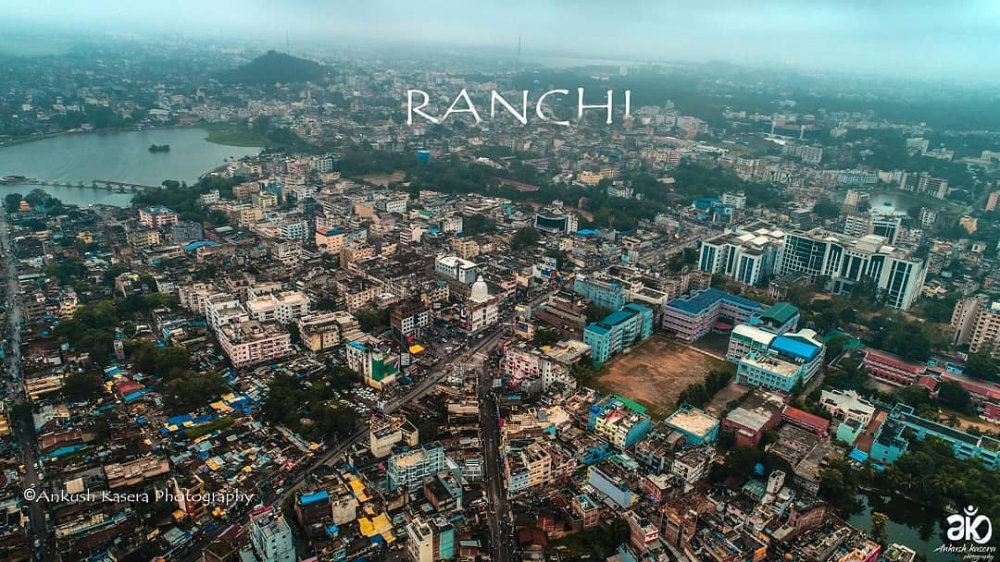
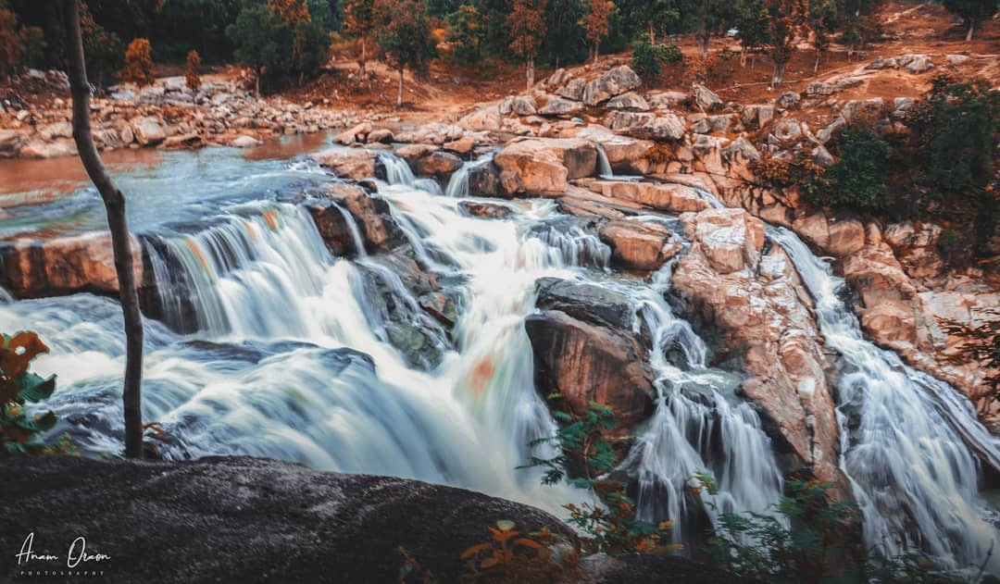
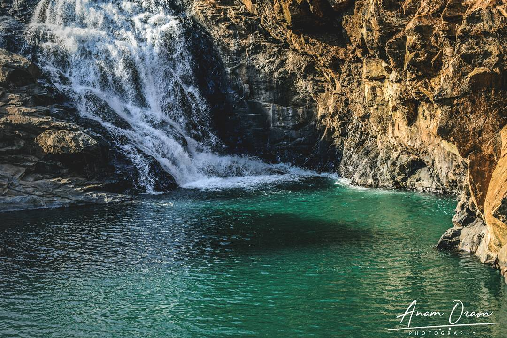

Waterfalls Of Jharkhand
|  |
Jharkhand is filled with natural resources; forests as well as minerals. It has many mines and is one of the main mineral producer of India. The state is also rich in green resources, hence the name the 'Land of Forests'. Jharkhand, sharing its border with Bihar, Chattisgarh, Odisha and West Bengal, has many tourist attractions. Among them, waterfalls in Jharkhand play a major role in tourism of the state. In fact, the capital city of Ranchi is known as the 'City of Waterfalls'. Jharkhand tourism gives many options for travellers and also has a number of beautiful waterfalls. Let's take a pictorial tour around the famous waterfalls in Jharkhand
|
Jhonha fall |
> |
Situated at an edge of the Ranchi plateau, the Jonha Falls is an example of a hanging valley falls. The Gunga River hangs over its master stream, Raru River and forms the falls.One has to descend 722 steps to admire the surroundings. Water in the falls drops from a height of 43 metres (141 ft).
The Jonha Falls is an example of a nick point caused by rejuvenation. Knick point, also called a nick point or simply nick, represents breaks in slopes in the longitudinal profile of a river caused by rejuvenation. The break in channel gradient allows water to fall vertically giving rise to a waterfall.
|
Hundru fall |
 |
Hundru Falls is formed by Subarnarekha river which leaps from a height of 322ft. It is the highest and the most popular waterfalls in Jharkhand. It is situated at a distance of 47 km from Ranchi and can be reached via Ranchi - Purulia road. |
Dasam Fall |
|  |
In Mundari language, Dassam means ' the song of pouring water'. Dassam Falls, situated in Taimara village, is around 40 km from Ranchi. River Kanchi creates this waterfall and people just love to visit this scenic beauty. Tourists are not allowed to swim as the water is used for current generation. So, it is advisable not to get into the water of Dassam falls. Reachable by road via NH 33 or Ranchi - Jhamshedpur Highway |
Perwaghah |
|  |
One of the most beautiful waterfalls in Jharkhand, hidden in the lush forests near Torpa block. In the rainy season, it is inaccessible. But, in winter around Christmas and New Year, it is one of the most popular picnic spots to enjoy.
This is the most beautiful falls in Jharkhand. It is located in Torpa & about 85 km from Ranchi. Torpa is Khunti District and you can reach there in half an hour from Ranchi. |